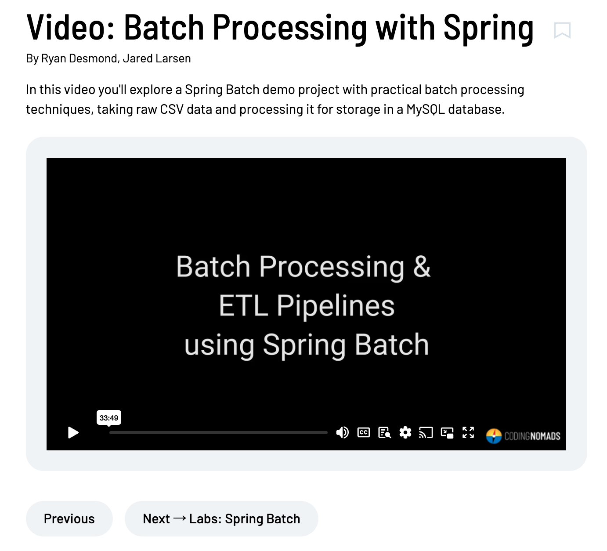

Until these creator docs recieve a complete overhaul, here is a quick guide to formatting content for the new platform https://codingnomads.com
Links¶
Links use standard markdown syntax and will open in new tab by default:
[Google](https://google.com)
Links can add an optional title that is displayed as a tool-tip:
[Google](https://google.com "The best search engine for privacy")
Images¶
Images can be single-tag and require a src attribute:
[[img src="http://www.image.com/location"]]
Images support alt and title attributes (and should include them), values must be wrapped in double quotes:
[[img src="http://www.image.com/location" alt="image alt text" title="The Title of This Image"]]
Image tags can be written in a multi-line format, and also support a link attribute which opens in a new tab by default:
[[img
src="http://www.image.com/location"
alt="image alt text"
title="The Title of This Image"
link="https://example.com"
]]
Videos¶
Videos are single-tag (no closing tag) and require an id attribute:
[[video id="77834767"]]
For Video lessons, please include the lesson description in the body above the embedded video:
In this video you'll explore a Spring Batch demo project with practical batch processing techniques, taking raw CSV data and processing it for storage in a MySQL database.
[[video id="764391747"]]

Notes¶
Notes require an opening and closing tag, and can contain markdown inside.
[[note]]
This is a note.
[This is a link](http://example.com).
This is still the same paragraph.
[[/note]]
Blank lines = a new paragraph in the rendered html:
[[note]]
This is a note [This is a link](http://example.com).
Hello, _this is Markdown_ and a second paragraph!
This is the third paragraph of a note with **bold**.
[[/note]]
Alerts¶
Alerts work the same way:
[[alert]]
This is an _alert_!
[[/alert]]

Learn by Doing¶
Require an opening and closing tags:
[[learn-by-doing]]
**Package:** `com.codingnomads.example`
This is a Learn by Doing!
[[/learn-by-doing]]
External Resources¶
For link blocks to additional resources:
[[external-resource src="https://example.com" link-text="Example Resource"]]
Checkout this _incredible_ resource!
[[/external-resource]]